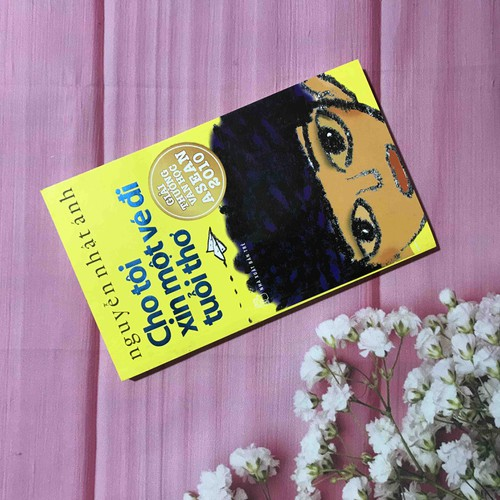

Về Tác Giả
Nguyễn Nhật Ánh (07/05/1955) là một nhà văn người Việt. Ông được biết đến qua nhiều tác phẩm văn học về đề tài tuổi mới lớn, các tác phẩm của ông rất được độc giả ưa chuộng và nhiều tác phẩm đã được chuyển thể thành phim. Ông lần lượt viết về sân khấu, phụ trách mục tiểu phẩm, phụ trách trang thiếu nhi và hiện nay là bình luận viên thể thao trên báo Sài Gòn Giải phóng Chủ nhật với bút danh Chu Đình Ngạn. Ngoài ra, ông còn có những bút danh khác như Anh Bồ Câu, Lê Duy Cật, Đông Phương Sóc, Sóc Phương Đông,...
Tác giả Nguyễn Nhật ÁnhVề Tác Phẩm
Cho tôi xin một vé đi tuổi thơ mời người đọc lên chuyến tàu quay ngược trở lại thăm tuổi thơ và tình bạn dễ thương của 4 bạn nhỏ trong cùng một khu xóm là con Tủn, con Tí sún, thằng Hải cò và thằng cu Mùi. Câu chuyện mở đầu bằng một câu cảm thán của thằng cu Mùi 8 tuổi nhưng tâm hồn thì chẳng khác nào một ông cụ non: “Một ngày tôi thấy cuộc sống thật là buồn chán và tẻ nhạt”.
Chúng hò nhau chơi đủ thứ trò từ trò chơi vợ chồng, đánh nhau đến rách áo chảy máu hay đặt lại tên cho cả thế giới. Trong thế giới muôn màu của lũ trẻ, cu Mùi được tôn lên làm hiệu trưởng, Hải cò là cảnh sát trưởng, Tí sún là Bạch Tuyết còn cái Tủn là tiếp viên hàng không. Khi đã quá chán với những bài học trên trường, chúng còn tự sáng tạo với những công thức toán học chưa từng có tiền lệ như 3 nhân 5 bằng mấy cũng được nhưng không được bằng 15.
Sau hàng loạt sự cố dở khóc dở người vì những trò chơi tự bày ra, bọn trẻ nhận ra cuộc sống có những chân lý không thể thay đổi. Tuy nhiên, chẳng dừng lại ở đó, 4 đứa nhóc tiếp tục cuộc phiêu lưu vô tận của mình bằng cách xới tung khu vườn nhà để đi tìm kho báu. Bên cạnh đó còn những câu chuyện tình yêu con nít với những ghen tuông hết sức đáng yêu giữa cu Mùi và Tủn khiến người đọc không khỏi bật cười.
Trong cái thế giới trẻ thơ của cu Mùi, Hải cò, Tí sún và con Tủn, không có nỗi lo cơm, áo, gạo, tiền, không có sự bộn bề của cuộc sống bận rộn, cái thế giới ấy chỉ có sự hồn nhiên trẻ thơ, chỉ có sự ngây ngô của tuổi trẻ non dại, nhưng cũng có những bài học nho nhỏ rút ra từ những cuộc nổi loạn hòng thoát khỏi “sự trói buộc”… Ai cũng đã từng một lần đi qua nó – thế giới trẻ thơ mà người lớn không tài nào hiểu nổi. Và giờ đây, khi phải lặn ngụp hàng ngày trong dòng chảy siết của cuộc sống, người ta lại ước ao được một lần quay lại cái thế giới khó hiểu ấy.
 Tác phẩm được giải thưởng văn học ASEAN 2010Với tác phẩm Cho tôi xin một vé đi tuổi thơ , Nguyễn Nhật Ánh không chỉ xin cho mình một chỗ ngồi trên chuyến tàu về lại tuổi thơ mà còn mang tặng tất cả mọi người một tấm vé để tìm về nơi trong trẻo, ngây ngô và yên bình nhất của đời người. “Được tắm mình trong dòng sông trong trẻo của tuổi thơ sẽ giúp bạn gột rửa những bụi bặm của thế giới người lớn một cách diệu kỳ”. Quả vậy, trang sách cuối cùng khép lại, hình như đã mở ra một khoảng trời của ngày xưa trong veo, lung linh một miền hoa nắng.
Cầm Cho Tôi Xin Một Vé Đi Tuổi Thơ trên tay, tức là bạn đang được cầm một tấm vé đi chuyến tàu đưa bạn về với tuổi thơ của chính bản thân mình. Bạn sẽ được trở về với những trò chơi thuở bé, những suy nghĩ non nớt ngây dại của mình ngày ấy. Cách viết của bác Nguyễn Nhật Ánh rất thú vị, nó cứ lôi cuốn người đọc một cách kì lạ, làm cho bạn đọc cảm thấy thực sự thoải mái và bình yên sau mỗi giờ làm việc, học tập căng thẳng.
Cuốn sách Cho tôi xin một vé đi tuổi thơ là một cách cửa mở ra cả một tuổi thơ mà mỗi người đã đi qua. Ai cũng mong ước được mãi là một đứa trẻ hồn nhiên mà chẳng phải lo nghĩ như người lớn. Nếu có tấm vé hành trình về lại tuổi thơ, chắc chắn tôi và bạn cũng xin đi nhờ một chuyến để về lại những tháng ngày khó mà quên.
“Để sống tốt hơn đôi khi chúng ta phải học làm trẻ con trước khi học làm người lớn”.